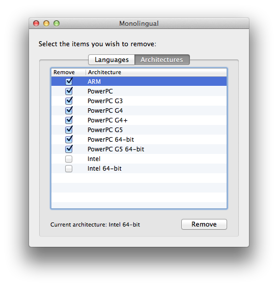
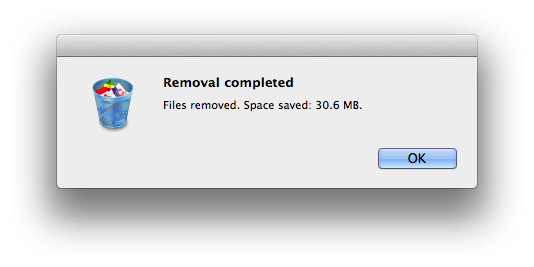
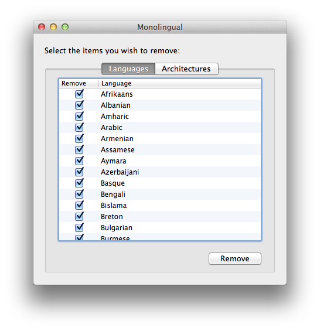
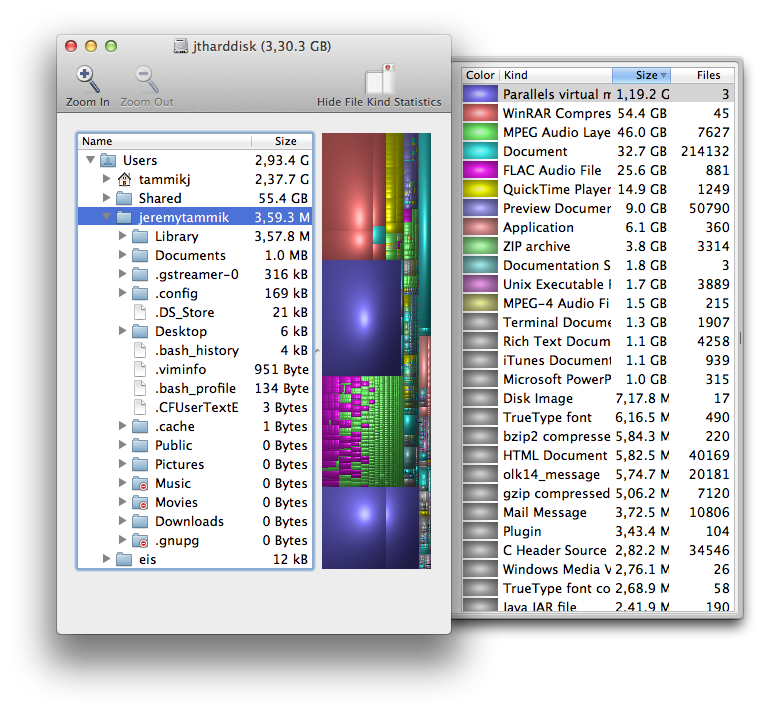

Removing Extreneous Mac Architectures, Languages and Files
Nature abhors vacuum, and every disk fills up.
This Mac has a 500 GB SSD, which is great, but gradually getting cramped.
Looking around for some disk space management tools, I also happened to stumble across Monolingual and made immediate and effective spontaneous use of it.
Mac programs come with bundled resources for multiple PC architectures and languages.
Monolingual is a program for removing unnecessary resources in order to reclaim several hundred megabytes of disk space.
It does exactly what it promises fast and effectively with zero hassle.
I first removed unneeded architectures from my installed program resources:

That saves a modest 30 MB of disk space:

Then I went for the list of languages, which is significantly longer:

Monolingual is clever enough to automatically uncheck all the languages that I currently have in use in my personal language settings from the list.
That saves 1.7 GB of disk space:
This is a pretty worthwhile result for a two-minute installation and two-minute execution process.
Add ten minutes of documentation time to that, and this is what you get.
I wish you a pleasant Sunday!
The weather here is pretty dreary, cold and windy, in case you hadn't guessed... :-)
Lifehacker and Disk Inventory X
While I was at it anyway, I also looked for a disk analyser.
I chanced upon a very illuminating and well-written article by lifehacker recommending Disk Inventory X, which I downloaded and tested.
Lifehacker looks pretty useful and competent in general, by the way.
Disk Inventory X produces an extremely clear overview of the disk usage:

Highly recommended, judging from my first impression.
It will still take some time and effort to explore exactly where I can efficiently save space, though...
Shortly thereafter I can report that I found some quick candidates such as the GarageBand support libraries, accounting for 1.4 GB of space, and XCode. I was forced to install it to obtain some libraries and Unix development tools, but I don't really need XCode itself, and it takes up over 3 GB.
Those are some significant savings...